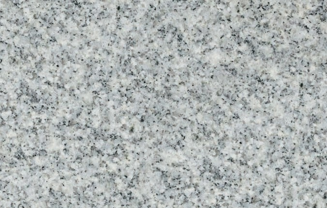

Origin: India (Direct Quarry)
Grade A Export Quality
GREY GRANITE
Sadaralli Grey Granite
A high-density, salt-and-pepper grey granite celebrated for exceptional compressive strength, weather resistance, and timeless architectural uniformity.
Bulk Export Supply Available
Direct from our processing facility in Bethamcherla, Andhra Pradesh. We supply container-load quantities with strict color calibration and quality inspection.
✓ Direct Factory Pricing
✓ Project-specific quotations
✓ Ocean Transit Crating